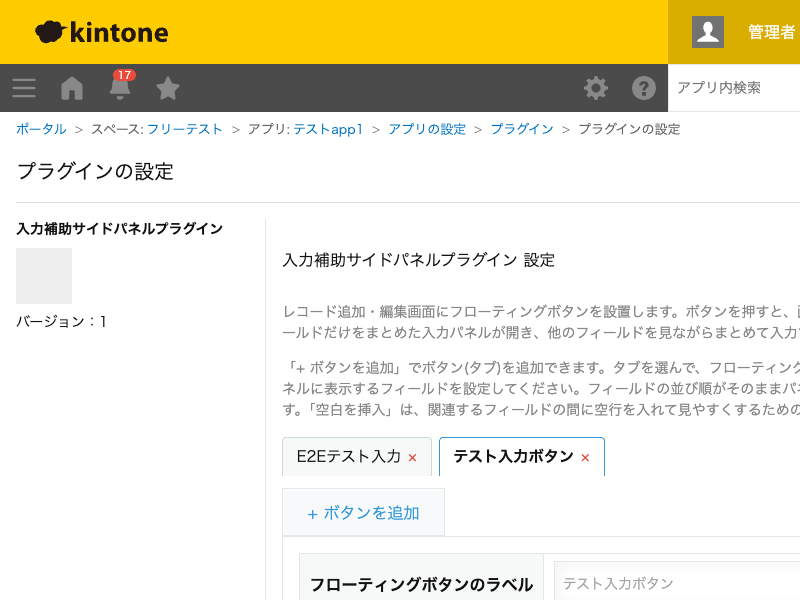

GovAppsプラグイン 安全性を確認できる無料kintoneプラグイン集
レコード追加・編集画面にフローティングボタンを設置し、押すと画面右端に指定したフィールドだけを まとめた入力パネルが開くプラグインです。背景の元フォームは隠れず見えたままなので、他のフィールドの 値を確認しながらまとめて入力できます。パネルの「反映」ボタンで、入力した値をレコードへ書き込みます。
項目数の多いフォームでも、よく使う入力箇所だけをボタン1つで呼び出せるパネルにまとめておけば、画面をスクロールして探し回らずに入力できます。ボタンは複数設定できるので、「基本情報」「連絡先」のように用途ごとに使い分けることもできます。
パネルは画面全体を覆わず右端に表示されるため、背景のフォームに書かれている他の項目の値を見ながら判断が必要な入力(例: 他部署の記入内容を見ながら自分の担当欄を埋める)をスムーズに行えます。
対応フィールド型は、文字列(1行・複数行)・数値・リンク・ラジオボタン・チェックボックス・複数選択・ドロップダウン・日付・時刻・日時です。ルックアップ・ユーザー選択・組織選択・グループ選択・添付ファイル・リッチエディター・関連レコード一覧・テーブル・システム項目(計算・レコード番号など)は選択肢に出ません。パネルはPC専用です(モバイル非対応)。
kintoneセキュアコーディングガイドラインに沿って実装時にチェックしています。特に重要な点は次のとおりです。
kintone.api()を一切使用しません。フィールド情報の取得はkintone.app.getFormFields()、レコードの読み書きはkintone.app.record.get()/kintone.app.record.set()(いずれもJavaScript API)のみで完結し、外部サーバーへの通信も行いません。kintone.app.record.set()で書き換えるのは、設定画面でアプリ管理者が明示的に選んだフィールドのみです。添付ファイル・リッチエディター・ユーザー/組織/グループ選択・ルックアップ・関連レコード一覧・テーブル・システム項目は選択肢に出せない仕組みにしており、HTML文字列をそのまま書き込むような経路も作っていません。textContentのみで組み立てており、innerHTMLを使用していません。詳細な確認項目・確認日は下記GitHubのチェックリストに全項目を掲載しています。

このプラグインはREST APIを一切実行しません。フィールド情報の取得はkintone.app.getFormFields()、
レコードの読み書きはkintone.app.record.get()/kintone.app.record.set()のみで行い、
いずれもJavaScript APIです。API実行数制限に影響することはありません。